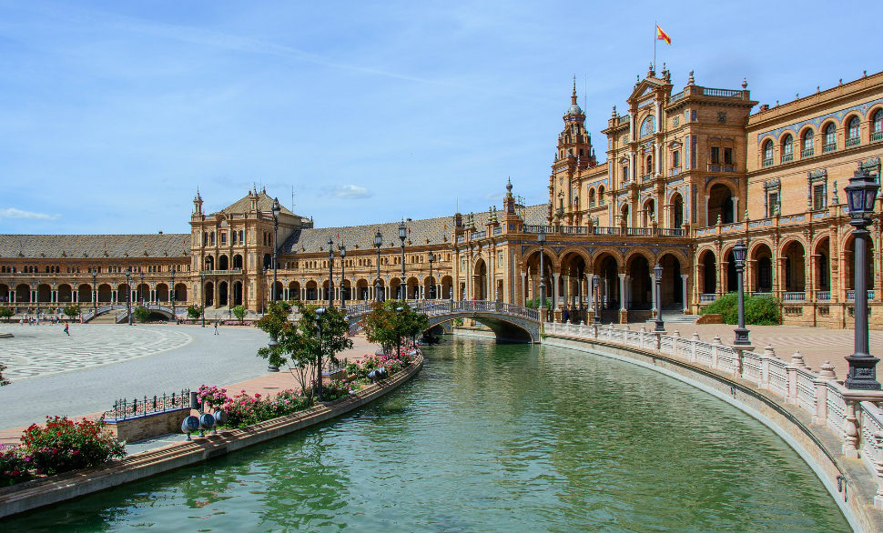

España
España, país de la península ibérica de Europa, incluye 17 regiones autónomas con diversas características
geográficas y culturales. En Madrid, su capital, se encuentra el Palacio Real y el Museo del Prado,
que alberga obras de maestros europeos. Segovia tiene un castillo medieval (el Alcázar) y un acueducto
romano intacto. La capital de Cataluña, Barcelona, se caracteriza por las obras modernistas extravagantes
de Antoni Gaudí, como el templo de la Sagrada Familia.
Antecedentes
Listado de Ciudades
- Madrid: 3.266.126 hab.
- Barcelona: 1.608.746 hab.
- Valencia: 794.288 hab.
- Sevilla: 688.592 hab.
- Zaragoza: 674.997 hab.
- Málaga: 574.654 hab.
Atractivos Turísticos
- La Sagrada Familia: Templo Expiatorio de la Sagrada Familia,
conocido simplemente como la Sagrada Familia, es una basílica católica de Barcelona,
diseñada por el arquitecto Antoni Gaudí. Iniciada en 1882, todavía está en construcción.
- Park Güell: El parque Güell es un parque público con jardines y elementos arquitectónicos situado en la parte
superior de la ciudad de Barcelona, en las estribaciones de la sierra de Collserola.
El parque se halla en la ladera sur del monte Carmelo y colindante a la ladera norte donde
se encuentra el parque del Carmelo.
- Casa Batlló: La Casa Batlló es un edificio obra del arquitecto Antoni Gaudí, máximo representante
del modernismo catalán. Se trata de una remodelación integral de un edificio previamente existente
en el solar, obra de Emilio Sala Cortés.
- Museo Nacional del Prado: El Museo Nacional del Prado, en Madrid, España, es uno de los más importantes
del mundo, así como uno de los más visitados. Singularmente rico en cuadros de maestros europeos de los
siglos XVI al XIX, según el historiador del arte e hispanista Jonathan Brown «pocos se atreverían a poner
en duda que es el museo más importante del mundo en pintura europea».
- Teatro-Museo Dalí: El Teatro-Museo Dalí es un museo dedicado enteramente al pintor Salvador Dalí
que encuentra en la plaza Gala-Salvador Dalí, número 5, en Figueras. Según The Art Newspaper,
basándose en datos facilitados por los propios museos, el Teatro-Museo Dalí fue el tercer museo
más visitado en España en 2017.
- Palacio Real de Madrid: El Palacio Real de Madrid es la residencia oficial del rey de España;
no obstante, los actuales reyes no habitan en él, sino en el Palacio de la Zarzuela, por lo que
es utilizado para ceremonias de Estado y actos solemnes.Con una extensión de 199 000 m² y 3478
habitaciones, es el palacio real más grande de Europa Occidental, y uno de los más grandes del mundo.
Imágenes

 Volver
Volver